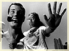
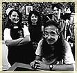
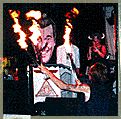

That's "Bob." Or, to be formal, Bob Dobbs, the Living Avatar of Slack. The icon of the Church of the SubGenius, a joke that started out with a snippet of clip art, a short pamphlet and a couple of guys dubious about the value of anything...
"What's Bob? He's just the luckiest guy in the whole world. He has all the slack and everyone else has to work for a living. But he's going to change all that," says the Rev. Ivan Stang, who works for Bob. Which is ironic, since Stang and a friend created him. "Now, actually, I try to avoid my boss. It's bad enough his picture is everywhere."
"Bob" is everywhere. Decals, T-shirts, coffee mugs, Web site backgrounds, bumper stickers, ASCII art, posters, book jacket covers, bookmarks and home pages. "I've seen it blow up to the size of a mountain side," Stang says. He doesn't mind some hapless slackers making use of the icon; he would be bothered if the trademark started getting used by some corporate suits to sell products, though.
"We're supposed to be making millions of bucks doing this. But of course, no one is really on the Web," says Stang.
In the beginning
For the uninitiated, this is the story of "Bob," according to Stang. Back in the 1950s, "Bob" realized that there was this conspiracy of normal people robbing away the slack of the abnormals. Of course, that's a huge category, the abnormals, says Stang. "It's hard to corral them all behind a single front. Even ÎBob' has a hard time with that. By definition, they are all different. Normals can be defined as anyone you don't like."
 A few common misperceptions about the whole Church of the SubGenius thing: "Bob" is not a real person, nor was he ever a living, breathing individual (although Stang will contest this vehemently). In fact, "Bob" was a piece of clip art destined for Yellow Page ads when Stang and a close friend, Philo Drummond, found him in the late 1970s. He just looked like all these guys the pair had seen in 1950s advertisements in mainstream mags. They were smug, happy men, who looked as if they learned to fit in with a decent-paying job and an easy 1950s post-war mortgage. To Stang and Drummond, the concept of a "Bob" represented all that life could be for a man who really didn't like to work too much: nice house, soft job, some poor schlep neighbor kid to mow his lawn while he smoked his pipe in the backyard hammock and napped.
"We knew who Dobbs was before we found the classic picture of him. We started seeing these pipe guys in Better Homes and Gardens ads in the '50s. Then we found this piece of clip art. We saw it and we both went, "Aha! This must be the one,'" Stang says.
The Church of the SubGenius isn't really a church. It's actually pretty anti-church. It's not a cult. It's a state of mind. (Although, so is a cult, but that's a whole other story). The preachings of mass religion really pushed them to do it, says Stang.
 "I'm like L. Ron Hubbard, another struggling science-fiction writer," Stang jokes. "I couldn't get anything published, so I started a religion" Although, he stresses he didn't do it alone. "Bob" channeled his word through a legion of dedicated, often prolific followers in the past two decades.
The whole affair started in Dallas, largely in the underground comics world. Stang created these nutty pamphlets, selling "Bob" as a religious icon through tales of complex negotiations with terrible aliens, ways to save oneself through slack and, of course, requests to send money. Unlike most religions, they even offered a guarantee: "Eternal salvation -- or triple your money back!"
"That's the first place that I was sending them at first. The publishers all looked at this stuff and thought, ÎOh, more kook materials,' and would throw them in the trash. But the artists at these places would pick them out of the trash, read them and think, ÎCool.'"
Within time, Stang and Drummond got invited to do a radio show. Then another. And another. Within a few years, they had enough of a following, so they published their Book of the SubGenius. It's never been a best-seller, perhaps hitting 50,000 copies, but it's been the epicenter of any serious liberal arts grad student's wood plank-and-cinder block library ever since. Now the Church has a new book, Revelation X. Stang said he's not sure how that's selling. His other pamphlet/book High Weirdness by Mail outlining all the offers by "rival crackpots," as Stang puts it, remains one of the highlights of the Web site, new and improved, with hyperlinks. Over the years, they've developed a message. It's pretty simple. It was first outlined in pamphlets and later in the books.
"What we're really trying to communicate? Send ÎBob' as much money as you possibly can. Don't be fooled by lying crackpots and religious nuts that might tell you the same thing. We're the only ones that don't lie about how full of bullshit we are and that's worth something," says Stang. "Fuck the normals and get all the slack you can. The first rule of the church can be politely termed ÎLet he that cannot take a joke, let them mount up upon themselves.'"
Along the way, Stang himself has evolved into something of a cultish figure. How else do you explain a 42-year-old in a white suit, "preaching" to the masses before a GWAR concert? That was his most recent attempt at missionary work. Stang doesn't have a real job. Well, he used to be a freelance video and film producer, traveling all over the world. Now, he just writes and sits at his Dallas home, putting together one of the largest, most heavily-linked non-commercial sites on the Web -- the Shrine of the SubGenius.
Along with the Web site, Stang travels the country (the details of his itineraries are available on the Web site). He hits clubs, offering the Word of "Bob" and along with an accompanying act, the Circus Apocalypse, they eat lightbulbs, breathe fire and sew each other's mouths shut with piano wire. And, of course, they take up a collection. Most audiences fall in the $300 to $400 range.
"You never know who will show up, little old ladies and families with kids. Kids with piercings, it's not something you can pin down."
Some of the other Church creators have little to do with the Internet activities. Drummond, also 42, lives in St. Louis where he heads a popular band, The Swinging Love Corpses. Another Church of the SubGenius founder, Paul Mavrites, author of the cartoon The Fabulous Furry Freak Brothers, just recently won a lawsuit with the state of California over taxes (the SubGenius Church pleaded with believers to send Mavrites money, of course). Over the years, there have been dozens who have added to the collective wisdom of the Church's teaching. Stang has served as ring leader, occasionally bringing the "prophets" together in a hotel room, turning on a tape recorder and letting the spirit of "Bob" bring forth new worship to their icon.
"Bob" Web
http://sunsite.unc.edu/subgenius/
Throughout the years, Stang and his minions have set up a complex set of hierarchies of Elder Gods, holy creatures, essays on the Word of "Bob" and an elaborate foretelling of the future that includes saving the human race by way of Flying Saucers. It's a lot of stuff and it really didn't fit together through the pamphlets distributed by a small network of SubGenius workers. Plus, access to other slackers preaching the Good Word of "Bob" or the occasional "preaching" sessions offered by Stang and his cronies didn't really spread the church's mission statements as far as the founders would have liked. So, for most paper, the head of "Bob" and the accompanying word were something of an inside joke for academics, intellectuals and the occasional glue-sniffing polymorphic biker.
But the technology of the Web allows slackers to get their dose of SubGenius without leaving the comfort of their desks. (And what could be better for a bunch of slackers?)
"We finally got on the Internet about a year ago and we found that there was a newsgroup, alt.slack," Stang says. His voice is serious. "It was like discovering a new subcontinent. It really was the that big. In many ways, it was a blessing. The Church has been around so long that it needed a whole shot in the arm. For us, it really is so much cheaper to print on electrons than paper. And we could never handle color."
Now, the Church of the SubGenuis site has color. Lots of it. It also has radio, with sermons by Stang available for the downloading, featuring church preachers and bands heard in real time via TrueSpeech. On his Web site, you can find the Endless FAQ (pity the poor sucker who expected a detailed Frequently Asked Questions list for a newsgroup called alt.slack). The Hall of Answers offers a serious look at dogs and slacking. You can learn about detailed pacts with terrible aliens or why it's all right to quit your job and become a slacker, if only for a couple of minutes. Then there's Bob's Slacktime Funhouse, filled with screensavers, games and more (most programs are for Macs). That's just the beginning.
"It's funny how I got this giant Web site. These guys at Sunsite approached me and said, ÎDo you know anything about the Web?' I said ÎNo' and they said, ÎGood. How would you like to head up a big Web site?' I wrote up this plan that included video and audio. ÎExperts' at the time kept telling me these things were impossible. But even before we finished the text part, audio and video became available."
 Stang doesn't get paid for doing the Web site, nor does he pay for it. Sunsite, a technology lab, offers the space on their server free. The Web has revolutionized the Church.
"I'm really excited about the various radio formats. We've got the radio show in TrueSpeech and they seem to have all the bugs worked out but now the site is so damn busy I cannot get into it so I can't tell." His sermons on the Web have expanded to include the Unclean Hour of Slack, which incorporates foul language and naughty jokes he could never use on the air. He wonders how long he'll be able to keep it up, as the Web becomes the knot in a tug of war over obscenity issues. "I worry about the censorship aspects. That's a real danger. I feel like we're cussing on borrowed time. I started realizing a couple of months ago. For years, I've been watering down all this cool material for broadcast because of the FCC, which I'm used to. But we don't have to on the Internet. At least, not now."
Stang can see a future in which the government dictates the parameters of the Internet the same way it's learned to regulate everything from postal codes to airport gridlock in its nanny-state mentality.
"I feel sorry for those in that position when the hackers decide to get revenge. Just as the Army has things stashed away that could wipe out all life on Earth, hackers have stuff stashed away that could shut down the government. It could be ugly."
The Stark Fist of Reality
Of course, the hallmark for the Church of the SubGenius lies within the standard concept that no one should really trust anything but themselves. Never rely on the word of someone in a suit, offering a simple solution or with a methodology that screams hidden agenda. To Stang, most organized religions fall within those parameters. Yet, without 'em, the SubGenius clan wouldn't exist.
"Real religions wouldn't like us much if they knew that we were making fun of them, but few do. The New Age people get upset, though. They think we're putting out all this negative energy," says Stang. "It would be really easy to pull a David Koresh, though. People will pay to find out what they believe. They don't know any better, so they will hold on fiercely to their cherished beliefs. People don't distrust religion enough. They'll sure distrust it if they become a follower of ÎBob' for very long. The way it's set up, it's very attractive and you're going to get all this slack and ÎBob' promises all these wonderful things. Maybe there's more than a joke. There are probably people who believe Î"Bob" is going to save me.' And then we pull the rug out from under them. We deprogram our own zombies."
In the end, those who want to be really safe should probably purchase their escape vessel tickets, $30 from the Church(no tickets will be sold on the saucers.)
"Everyone thinks we're joking about that one. But hey, one of these religions has to be real. What if it's this one?"